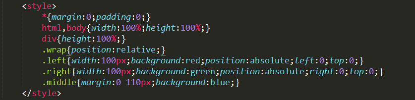
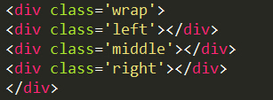
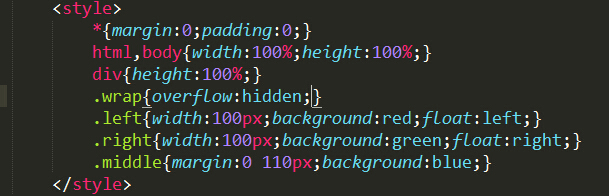
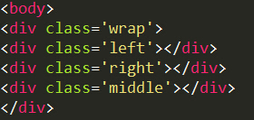
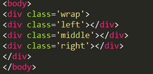
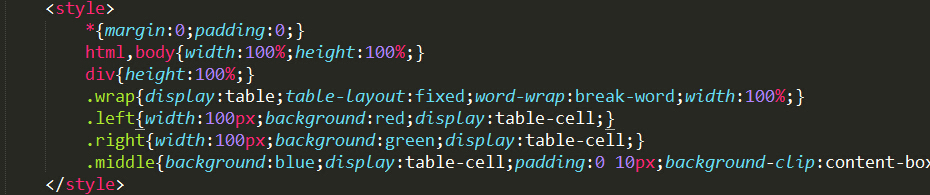
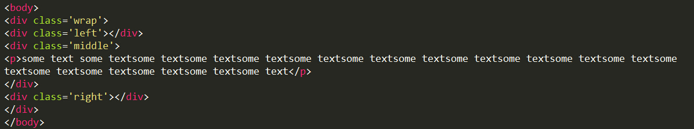

左右两列顶宽、中间自适应的三列布局
左右两列顶宽、中间自适应的三列布局的是常见的布局方式，常见的实现方式如下：
①绝对定位法
CSS
HTML
利用绝对定位实现起来很容易，也很容易理解。HTML也没有太多的限制，毕竟有两个直接脱离了文档流，左右中三块顺序随意。不过，因为是自适应，中间如果内容比较少，两边就容易突出出来，因为父元素wrap的高度是由中间那块决定的。
②浮动+正值margin
CSS
HTML
浮动最开始是为了实现图片环绕效果而出现的，不过现在成了有名的布局方式。这种布局方式也是很容易理解，但是HTML中三块的顺序是一定的，中间区域必须放到最后。然而，通常来说中间区域的内容是最重要的，所以对于某些网速比较慢的用户来说可能会有些影响。
③浮动+负值margin
CSS

HTML

这个方法和上面的方法类似，不过可以不用担心中间内容的clear了，因位middleWrap是浮动的，自身生成了BFC。而且这种布局方式使得中间的HTML必须放在最开始，一般来说，中间的内容是最主要的内容，因而保证了最重要的内容最先加载。而上一种利用浮动进行布局却必须要把中间内容放在HTML的最后。但是，各种负值margin确实不好理解
④flex
CSS

HTML
flex是布局神器，除了兼容性问题用起来还是很爽的
⑤利用table布局
CSS
HTML
据说在上古时代利用table布局是一种时尚，不过那时候是货真价实的table。table布局有些小问题要处理，比如display：table的元素默认为内容宽度，比如文本不换行这个问题，都要去处理。还有一点比较难用的是不能设置margin，只能设置padding。对于利用table布局说实话我了解的还不多，虽然这种布局方式已经很老了。有时间再总结吧。
两列定宽，一列自适应这种效果，据我所知就这些写法。再搜集吧
总结一下，利用绝对定位实现三列布局属于脑洞有点大，真的不推荐。我是倾向于使用float布局的，两种浮动形式我个人倾向于使用一个左浮动一个右浮动中间加margin这种形式，胜在好理解，除了中间要慎用clear这个大坑。flex虽然强大，好歹也要顾及一下兼容性问题。table布局我是向来不喜欢
自从接触了bootstrap之后，发现bootstrap所提供的栅格系统还是很不错的，它用的是浮动做的。每一列的具体宽度用的百分比实现的。
现在用大屏看网页看得多了，发现在大屏下还是要有个最大宽度比较好看，除非页面有大量信息。从这个角度上看，一般最外面会有个最大宽度的限制，这就意味着一般这种程度的布局从一开始定下来就很难回头了，中间是否自适应已经没有太大的意义了。然而，还有改需求这一说。。所以还是保留自适应吧。